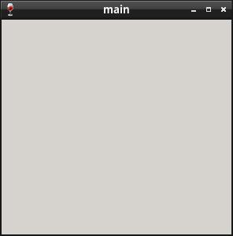

參考資訊：
http://www.winprog.org/tutorial/start.html
https://learn.microsoft.com/en-us/windows/win32/api/winuser/nf-winuser-messagebox
一般在建立Windows視窗時，會註冊自定義的Class並且設定事件處理的副程式(callback)，不過，目前範例使用的Class是系統預設的WC_DIALOG，因此，可以透過SetWindowLong()設定callback，這種替換callback的行為就稱為Subclass，意指為原本Class的Subclass，所以Subclass後，需要將原先callback的位址(SetWindowLong()的回傳值)保存下來，然後透過呼叫CallWindowProc()(傳入原先callback的位址)，用來將處理控制權移交回原先視窗元件，所以當有多層Subclass的情形發生時，每次在處理事件時，記得判斷對應的Handle，如：在處理關閉事件時(WM_CLOSE)，會先判斷目前的hWnd是否為當前的視窗hWnd，如果是當前視窗hWnd，才進行關閉的動作，避免關閉到其它視窗元件
main.s
.include "head.inc"
.data
hWin: .skip 4
szMsg: .skip 28
szAppName: .asciz "main"
pDefWndProc: .skip 4
.text
WndProc:
push { lr }
cmp r1, #WM_CLOSE
beq handle_close
cmp r1, #WM_DESTROY
beq handle_destroy
b handle_default
handle_close:
bl DestroyWindow
eor r0, r0
b finish
handle_destroy:
ldr r0, =0
bl PostQuitMessage
eor r0, r0
b finish
handle_default:
push { r3 }
mov r3, r2
mov r2, r1
mov r1, r0
ldr r0, =pDefWndProc
ldr r0, [r0]
bl CallWindowProcA
add sp, sp, #4
b finish
finish:
pop { pc }
WinMain:
push { lr }
ldr r3, =0
ldr r2, =0
ldr r1, =0
ldr r0, =0
push { r0, r1, r2, r3 }
ldr r3, =300
ldr r2, =300
ldr r1, =0
ldr r0, =0
push { r0, r1, r2, r3 }
ldr r3, =WS_OVERLAPPEDWINDOW | WS_VISIBLE
ldr r2, =szAppName
ldr r1, =WC_DIALOG
ldr r0, =WS_EX_LEFT
bl CreateWindowExA
add sp, sp, #32
ldr r1, =hWin
str r0, [r1]
ldr r2, =WndProc
ldr r1, =GWL_WNDPROC
bl SetWindowLongA
ldr r1, =pDefWndProc
str r0, [r1]
loop:
ldr r3, =0
ldr r2, =0
ldr r1, =0
ldr r0, =szMsg
bl GetMessageA
cmp r0, #0
beq exit
ldr r0, =szMsg
bl DispatchMessageA
b loop
exit:
mov r0, #0
bl ExitProcess
pop { pc }
Line 18~27：關閉視窗的順序為：主視窗收到WM_CLOSE事件時，呼叫DestroyWindow()，DestroyWindow()會自動將子視窗的相關資源也一併釋放掉(包含Resource描述的資源)，系統接著會發送WM_DESTROY事件給主視窗，待主視窗收到WM_DESTROY事件時，呼叫PostQuitMessage()結束視窗，值得注意的地方是，SendMessage()是屬於Block方式呼叫(必須等待動作執行完畢才返回)，而PostQuitMessage()則是Non-block方式呼叫
Line 29~38：將處理控制權移交給下一個視窗元件
編譯、執行
$ winegcc main.s -o main $ wine ./main.exe
